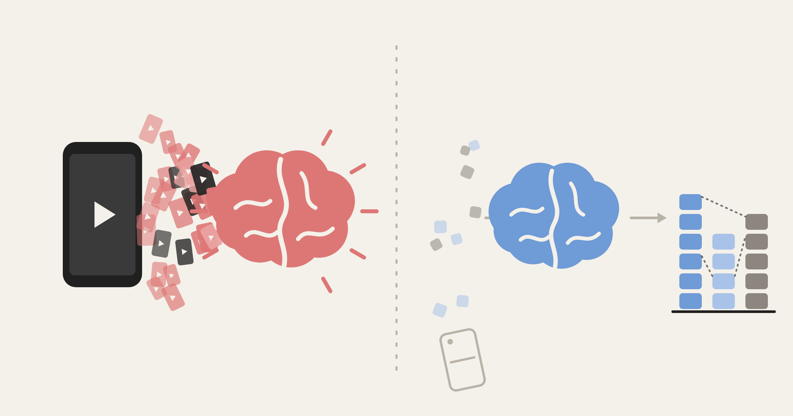

내 뇌는 매일 공격받고 있다.

『브레인 악셀』, 이진우
쇼츠 = DDoS
쇼츠는 '셀프 디도스'라고 한다. 디도스는 서버 하나에 접속 요청을 한꺼번에 쏟아부어 마비시키는 공격이다. 저자는 쉬지 않고 쇼츠를 넘기는 습관을 내가 내 뇌에 거는 디도스 공격이라고 부른다. 이만큼 정확한 표현이 없다.
쉬고 나면 기분이 어떤지 떠올려 보면 차이가 분명하다. 그냥 가만히 쉬고 나면 매번은 아니어도 에너지가 차오르고 개운하다. 쇼츠를 보고 나면 어김없이 시간을 대충 흘려보냈다는 죄책감과 찝찝함이 남는다. Pleasure 가 미미한 Guilty Pleasure다. 특히 "내가 폰을 왜 보기 시작했지?" 싶을 때가 그렇다. 무언가를 보려고 폰을 든 게 아니라, 들고 나서 수동적으로 콘텐츠 회사가 원하는 대로 알고리즘을 따라간 것이다.
보고 싶은 걸 검색해서 보는 것과 피드를 내리며 보는 건 다르다. 스크롤은 수동적인 활동이고, 수동적인 활동은 재미가 없다. 차라리 긴 영화 한 편을 보고 감상을 적는 편이 훨씬 낫다.
멍때리면 뇌 속 정리 많이 된다
멍때리는 시간은 쓸모 있는 시간이다. 아무것도 하지 않을 때 켜지는 뇌의 네트워크가 있는데, 이를 DMN(디폴트 모드 네트워크)이라고 부른다. 이 시간에 뇌는 그동안 들어온 수많은 정보를 정리하고 서로 연결한다.
일상 중 DMN을 경험할 때가 있다. 사우나에 앉아 있거나 성당에 가만히 앉아 있을 때, 폰 배터리 없을 때 등이다. 외부 디지털 자극이 없으면 이런저런 생각이 떠오른다. 꼭 유레카는 아니어도 머릿속에서 생각이 자유롭게 떠다니는 느낌이 좋았다. 알고 보니 여러 Input을 처리하는 과정이었다.
신기했던 건 뇌가 쉴 때도 거의 쉬지 않는다는 점이다. 뇌는 몸 전체 에너지의 20% 가까이를 쓴다. 그런데 무언가에 집중할 때 5% 만 더 쓴다고 한다. 뇌는 멍때리는 동안에도 계속 일하고 있는 셈이다. 그니까 멍때리며 쉴 때 시간 낭비한다고 느낄 필요 없이 뇌가 열일하게 내비두면 된다.
폰은 물리적인 차단이 필요하다
디지털 디톡스 팁은 뻔하지만 해 볼만하다. 저자는 폰을 정해진 자리에 두고 공중전화처럼 쓰라고 한다. 가기 귀찮게 만드는 것이다. 비밀번호를 어렵게 걸어 두거나 사용 제한 앱을 쓰는 방법도 소개한다. 내 경험으로는 앱을 아예 지우는 게 좋았다. (깔았다 지웠다를 반복하긴 한다.)
자기 전에 폰을 보지 말라는 팁도 중요하다. 마냥 안 하기보다는 무언가를 하는 게 편한데 폰을 책으로 바꿔야 한다. 물론 쉽지 않다. 책이 생활의 일부가 되어야 가능할 것 같다. 그래서 자기 전 독서는 목적을 두지 않는 게 좋다고 생각한다. 무언가를 얻으려고 읽기보다 산책하듯 편하게 읽기 시작하자
한 번은 길게 끊어 봐야 좋다
저자는 오랫동안 디지털과 단절하는 '생각 주간(Think Week)'을 권한다. 저자는 수능 끝나고 간 여행에서 폰을 잃어버려 3주간 디지털 디톡스를 하고 인지적인 회복을 경험했다. 빌 게이츠는 의도적으로 1년에 두 번 외딴 곳에서 혼자 책과 생각만으로 일주일을 보낸다고 한다. 정말 필요하다. 개인적으로 셀프 디지털 디톡스를 1박2일 했었는데 등산하고 쉬고 책읽고 글쓰고 하니 머리가 또렷해지는 느낌이 있었다. 더 길게 가보는 게 좋을 것 같다.
카페인은 서서히 줄이라고 하는데, 쇼츠는 왜 한 번에 끊어야 할까. 카페인을 천천히 줄이는 건 몸 때문이다. 몸이 카페인에 적응해 있어서 갑자기 끊으면 며칠씩 두통과 무기력이 온다. 쇼츠는 그런 신체 반응이 없다. 차이는 보상 방식에 있다. 커피는 마실 때마다 비슷한 만족을 주고, 몇 잔이면 멈춘다. 쇼츠는 30개씩 보다가 하나가 재밌는 식이라 언제 걸릴지 모르고, 끝도 없다. 언제 올지 모르는 보상은 습관을 고착화시킨다. 그래서 "잠깐만 봐야지"가 안되고 보다가 졸다가 얼굴에 폰 떨어뜨리게 된다.
그렇다면 얼마나 끊어야 할까. 중독 전문의 에나 렘키씨는 초반 10~14일이 가장 힘들고, 3~4주는 지나야 평범한 일에서 다시 즐거움을 느낀다고 말한다. 적어도 2주, 가능하면 한 달은 끊어 보는 게 좋겠다.
시작이 반이다
- 쇼츠가 나오는 앱은 삭제한다. 필요하면 노트북에서 검색해서 본다.
- 집에 폰 둘 자리를 하나 정한다. 침실에는 들고 들어가지 않는다.
- 침대 옆에는 책만 둔다. 자기 전에는 목적 없이 몇 쪽만 읽는다.
- 하루 한 번 폰 없는 시간 15분 확보한다
- 1주 Think Week 계획하기. 폰 없이 떠나서 혼자 가서 읽고 걷고 쓰고 한다.
어려운 뇌과학 개념을 이렇게 명료하게 풀어 준 책은 오랜만이었다. 읽고 나서 무엇을 빼야 할지가 분명해졌다. 앱 하나 지우는 것부터 시작하려 한다.